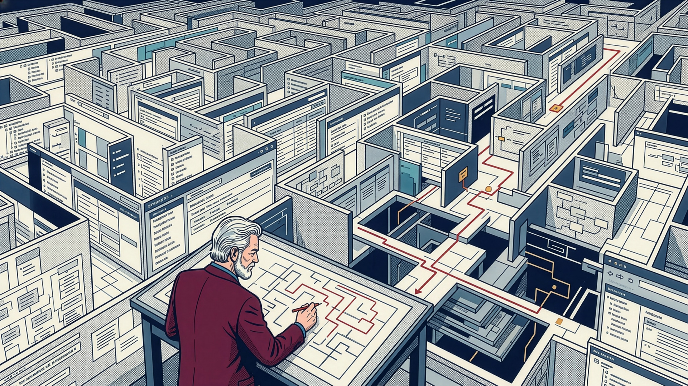
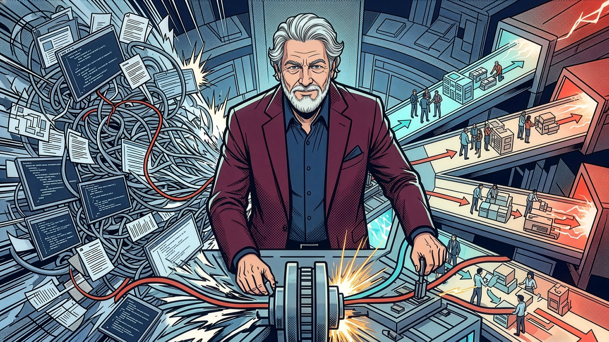

The product needed to change. Its customers needed to keep operating.
Established a phased modernization direction around customer needs and technical dependencies, with usability-tested workflows supporting more independent use.
At a Glance
- Critical financial operations
- Modernization direction
- Phased delivery
- Customer representation
Project Overview
- Product: CGI Momentum
- Domain: Federal and state financial management
- Engagement: Two-year platform modernization
- Core delivery team: 8 developers, 2 PMs, 2 designers
Leadership & Decision Authority
- Set direction: Established the modernization vision and product priorities.
- Controlled sequencing: Prioritized the backlog and organized phased delivery around dependencies and operational constraints.
- Owned readiness decisions: Defined acceptance criteria and approved release readiness.
- Represented the initiative: Presented the modernization direction to customer organizations at trade shows and user groups.
Challenge
Momentum supported complex government financial work, but core bugs prevented essential tasks such as bulk imports. Five-tier navigation, inconsistent patterns, and intricate object relationships added friction.
Senior associates spent approximately 60% of their time supporting junior colleagues. Onboarding and skill mastery were business priorities: less-experienced associates needed to understand their work and resolve issues more independently.
Hidden dependencies made modernization difficult to scope. Investigating one workflow often revealed additional rules, relationships, and constraints. We had to adapt priorities as that complexity emerged while coordinating with a separate initiative addressing the underlying technical debt.
Objectives
- Protect continuity. Stage the upgrade to account for record preservation, ongoing operations, and the burden of relearning.
- Support new and experienced users. Make complex tasks easier to learn without disregarding established expertise.
- Keep expanding scope executable. Prioritize consequential problems and establish reusable foundations for continued modernization.

Understand what customers depend on. Look beyond the interface to established workflows, data access, and custom features.

Adapt the path forward. Shape modernization around technical dependencies and customer concerns.
Approach
- Set modernization priorities from operational evidence. Directed attention to the workflows, user jobs, and dependencies behind the interface. Research and conversations with customers and system engineers informed twelve priority pain points and revealed friction the team had not previously understood.
- Establish a product direction for complex reporting work. Shaped experiences around government accounting relationships, transparency, and compliance-reporting needs. Prototypes made the proposed connections between underlying data and required reports concrete for product, engineering, and executive review.
- Adapt the plan around customer dependencies. Responded to experienced users’ and engineers’ concerns by adjusting the approach to preserve familiar practices, data access, and extensible features. Represented the modernization direction directly to customer organizations at trade shows and user groups.
- Sequence the work and define readiness. Prioritized the backlog into four planned release waves, weighing emerging dependencies, delivery constraints, and customers’ ability to absorb change. Defined acceptance criteria and approved release readiness, with reusable Section 508-aligned components supporting implementation.
Outcomes
Usability studies showed that the revised experience helped less-experienced associates understand their work and resolve issues more independently.
- Guidance and troubleshooting within the work. Optimized workflows, onboarding, and contextual help clarified what tasks required. Clearer dependency errors helped participants identify, track, and resolve issues in complex forms without escalating to senior associates.
- Less effort finding information. Improved search and find capabilities made information easier to locate, while simpler key workflows reduced cognitive load.
- A clearer picture of the accounting work. Better organization of projects and their required documents helped users navigate the information needed for a complete accounting.
- Usability-tested workflows
- Independent error resolution
- Improved search
- Clearer project organization
These findings came from usability studies. I left before adoption gained traction, so the longer-term effect on onboarding and senior associates’ time was not yet measured.